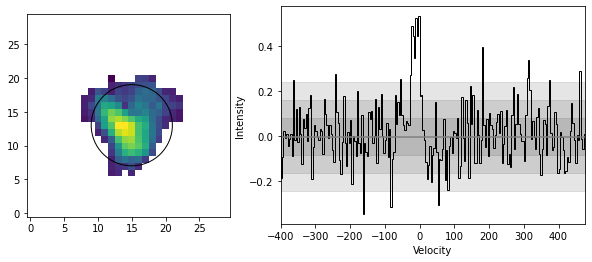

Spectral Analysis¶
To generate spectra, the user specifies the location of the aperture (elliptical by default), and the shape.
Continuing with our blob example, we generate spectra like so:
>>> blob.create_spectra((15, 13), (6, 6), plot=True)
This creates the following plot, showing the location of the spectral features in either velocity or channel space. CubeSPA uses sigma clipping to determine an RMS of the spectra, and then plots the 1,2 and 3-sigma levels as a shaded grey region.
{kind=link}
- cubespa.plotting.spectra_plots.plot_spectra(data, aper)¶
- cubespa.plotting.spectra_plots.spectra_plot(cubespa_obj, aper, spectrum)¶
- Create a plot showing both the image with overlaid spectra, as well as the spectrum with
RMS levels shown.
- Parameters:
cubespa_obj (cubespa.CubeSPA) – CubeSPA object.
aper (photutils.aperture) – Input aperture, generated using cubespa.spectra
spectrum (_type_) – _description_
- cubespa.spectra.analyze_spectra(spec, sigma=2, cmin=None, cmax=None)¶
- cubespa.spectra.create_aperture(cubespa_obj, position, shape, aper_type='elliptical', plot=False)¶
Generate photutils aperture of desired type, position, and shape.
- Returns:
Photutils aperture
- Return type:
photutils.aperture
- cubespa.spectra.get_spectra(cube, aper)¶
Get the spectra through a datacube at the position and size of a given aperture.
- Parameters:
cube (ndarray) – _description_
aper (photutils aperture) – Elliptical or circular aperture/annulus.
- Returns:
_description_
- Return type:
_type_